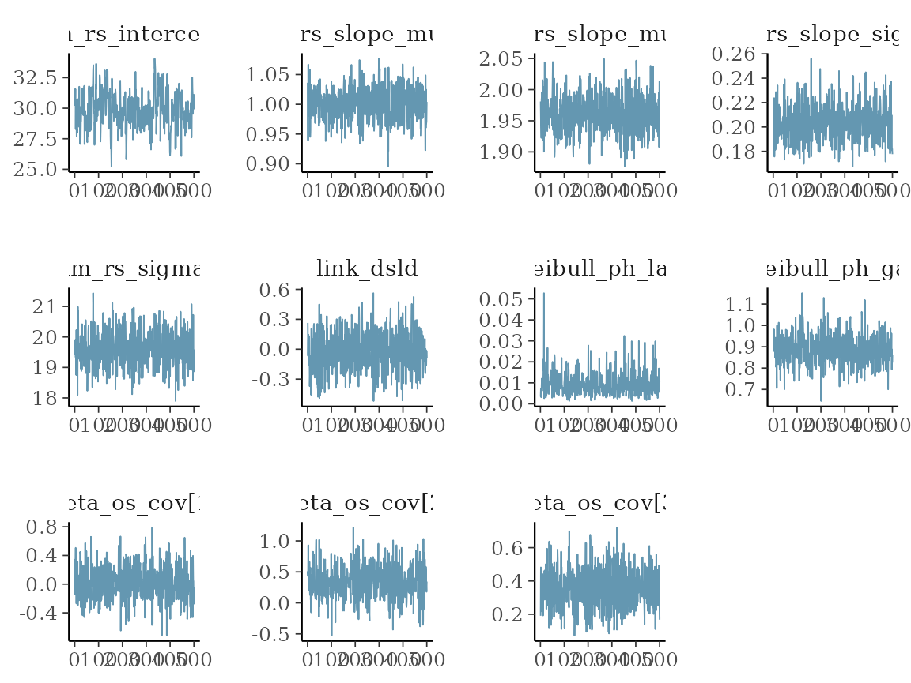
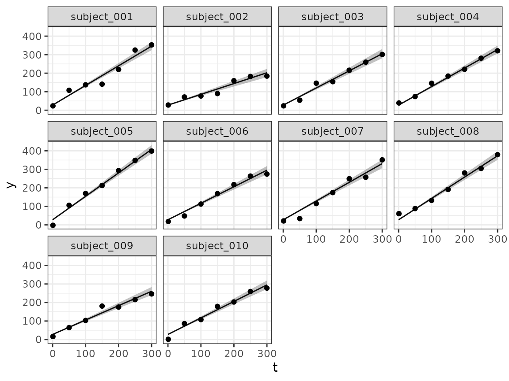
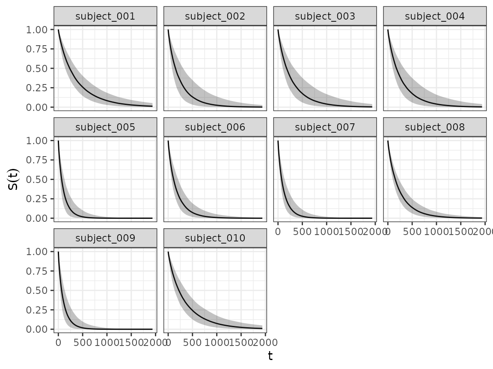
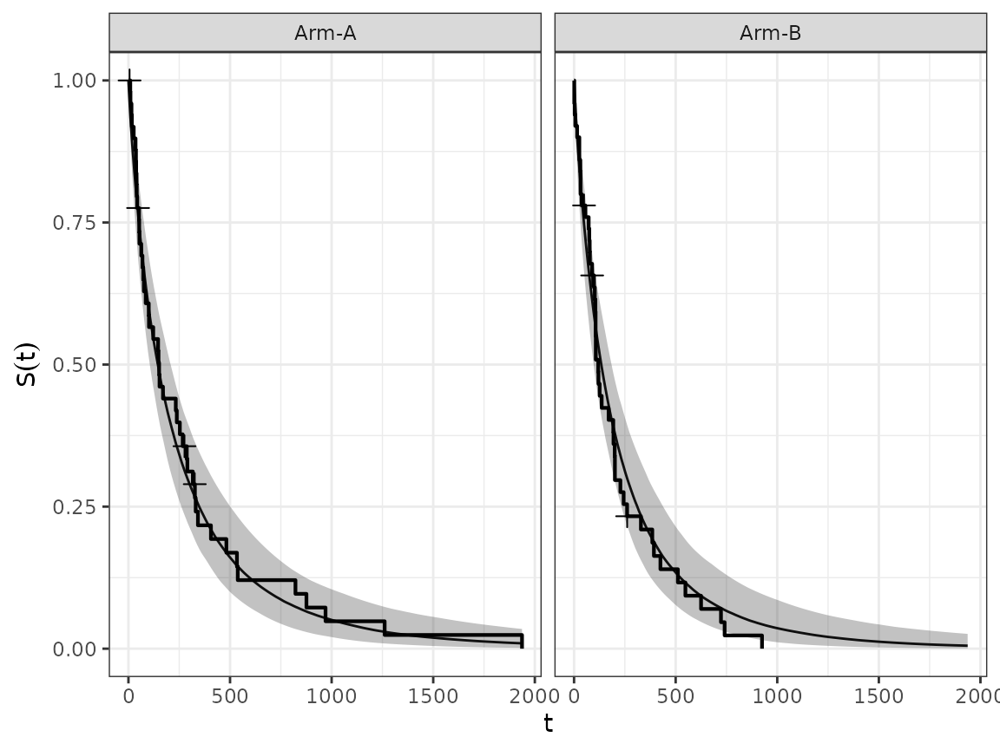

Model Fitting
model_fitting.RmdHere we describe the basic steps of joint model fitting with
{jmpost}.
Model Specification
Each JointModel needs to be specified with three
parts:
-
longitudinal: The model for the longitudinal outcomes. -
survival: The model for the survival outcomes. -
link: The link that specifies how thelongitudinalmodel parameters enter thesurvivalmodel.
Default Options
Let’s first specify a very simple joint model with:
- A random slope model for the longitudinal outcome.
- A Weibull proportional hazards model for the survival outcome.
- The link between the two models is that the random slope from the longitudinal model enters as a product with a link coefficient into the linear predictor of the survival model.
simple_model <- JointModel(
longitudinal = LongitudinalRandomSlope(),
link = LinkRandomSlope(),
survival = SurvivalWeibullPH()
)Note that here we use all the default options for the two models and the link, in particular the prior distributions and the initial values in the MCMC chain for the parameters are automatically chosen. We can see this from the arguments of the constructors (or from the help page):
args(LongitudinalRandomSlope)
#> function (intercept = prior_normal(30, 10, init = 30), slope_mu = prior_normal(0,
#> 15, init = 0.001), slope_sigma = prior_lognormal(1, 5, init = 1),
#> sigma = prior_lognormal(1, 5, init = 1), random_slope = prior_none(init = 0))
#> NULLSo here we see that there are 4 model parameters with a proper prior
and an additional random_slope one where just the initial
value can be specified.
Specifying Prior and Initial Values
We can alternatively also specify the prior distributions and the initial values for the parameters manually. This is important in practice to obtain a meaningful model specification and hence converging MCMC chains that allow to estimate the posterior distributions.
For the random slope model for the longitudinal outcome, we can e.g. say:
random_slope_model <- LongitudinalRandomSlope(
intercept = prior_normal(40, 5),
slope_mu = prior_normal(10, 2, init = 30)
)This sets the prior for the intercept, without stating
an explicit initial value. In this case the init value is
just set to the mean of the normal distribution, so 40. The
slope_mu argument then also sets the prior and a custom
initial value for the slope_mu parameter. The other
parameters are left with their default priors and initial values.
Separate Models
It is also possible to not link the longitudinal and the survival
models, by using the special LinkNone link specification.
For example,
simple_model_no_link <- JointModel(
longitudinal = LongitudinalRandomSlope(),
link = LinkNone(),
survival = SurvivalWeibullPH()
)would allow to fit the two models separately, but in the same MCMC chain.
Single Models
It is also possible to specify only the longitudinal or the survival model. Then these can be estimated on their own with separate MCMC chains.
single_longitudinal <- JointModel(
longitudinal = LongitudinalRandomSlope()
)
single_survival <- JointModel(
survival = SurvivalWeibullPH()
)Data Preparation
Before we can fit the models, we need to prepare the data in the right format.
Simulating Data
Here we start from a simulated data set.
- We assign 50 patients each to the two treatment arms.
- We use a time grid from 1 to 2000, e.g. specifying the days after randomization.
- We use an exponentially distributed censoring time with mean of 9000 days.
- We use a categorical covariate with three levels A, B and C in the overall survival model, drawn uniformly from the three levels. (Note that this is hardcoded at the moment, so the levels need to be A, B, C.)
- We use another continuous covariate in the overall survival model generated from a standard normal distribution, with coefficient 0.3.
- For the longitudinal outcome, we draw the values from a random slope model with the given parameters.
- For the survival outcome, we draw the true value from a Weibull
model. Note that it is fairly easy to put here another choice, you just
need to specify a function of
timereturning the log baseline hazard under the given survival model.
So let’s run the code for that:
set.seed(129)
sim_data <- simulate_joint_data(
n_arm = c(50, 50),
times = 1:2000,
lambda_cen = 1 / 9000,
beta_cat = c(
"A" = 0,
"B" = -0.1,
"C" = 0.5
),
beta_cont = 0.3,
lm_fun = sim_lm_random_slope(
intercept = 30,
slope_mu = c(1, 2),
slope_sigma = 0.2,
sigma = 20,
phi = 0.1
),
os_fun = sim_os_weibull(
lambda = 1 / 300,
gamma = 0.97
)
)We might get a message here that a few patients did not die before the day 2000, but this is not of concern. Basically it just gives us a feeling of how many survival events are included in the data set.
Formatting Data
Next we bring the data into the right format.
We start with extracting data into individual data sets, and then reducing the longitudinal data to specific time points.
os_data <- sim_data$os
long_data <- sim_data$lm |>
dplyr::filter(time %in% c(1, 50, 100, 150, 200, 250, 300)) |>
dplyr::arrange(time, pt)Let’s have a quick look at the format:
The survival data has:
- patient ID
- time point
- continuous covariate value
- categorical covariate level
- event indicator (1 for observed, 0 for censored)
- study ID
- treatment arm
head(os_data)
#> # A tibble: 6 × 7
#> pt time event cov_cont cov_cat study arm
#> <chr> <dbl> <dbl> <dbl> <fct> <fct> <fct>
#> 1 pt_00001 35 1 -1.12 B Study-1 Group-1
#> 2 pt_00002 17 1 -0.990 C Study-1 Group-1
#> 3 pt_00003 876 1 -1.37 C Study-1 Group-1
#> 4 pt_00004 100 1 -1.36 C Study-1 Group-1
#> 5 pt_00005 9 1 2.00 B Study-1 Group-1
#> 6 pt_00006 122 1 0.696 B Study-1 Group-1The longitudinal data has:
- patient ID
- time point
- sum of longest diameters (SLD)
- study ID
- treatment arm
- observation flag
head(long_data)
#> # A tibble: 6 × 6
#> pt time sld study arm observed
#> <chr> <dbl> <dbl> <fct> <fct> <lgl>
#> 1 pt_00001 1 23.4 Study-1 Group-1 TRUE
#> 2 pt_00002 1 16.1 Study-1 Group-1 TRUE
#> 3 pt_00003 1 41.9 Study-1 Group-1 TRUE
#> 4 pt_00004 1 44.5 Study-1 Group-1 TRUE
#> 5 pt_00005 1 23.8 Study-1 Group-1 TRUE
#> 6 pt_00006 1 0.130 Study-1 Group-1 TRUEFinally, we wrap these in the data formatting functions. Here the mapping of the column names to the required variables happens. This means that in our applications we don’t have to use the same variable names as seen above, but we can use custom names and then apply the mapping here.
joint_data <- DataJoint(
survival = DataSurvival(
data = os_data,
formula = Surv(time, event) ~ cov_cat + cov_cont,
subject = "pt",
arm = "arm",
study = "study"
),
longitudinal = DataLongitudinal(
data = long_data,
formula = sld ~ time,
subject = "pt",
threshold = 5
)
)Model Fitting
Now let’s have a look how we can fit the (joint) models.
Debugging Stan Code
It is always possible to read out the Stan code that is contained in
the JointModel object, using write_stan():
Sampling Parameters
Finally, sampleStanModel() is kicking off the MCMC
sampler via cmdstanr in the backend. Note that in practice
you would increase the number of warm-up and sampling iterations.
mcmc_results <- sampleStanModel(
simple_model,
data = joint_data,
iter_sampling = 500,
iter_warmup = 500,
chains = 1,
parallel_chains = 1
)#> CmdStan path set to: /root/.cmdstan/cmdstan-2.32.2Convergence checks
After the sampling finishes, we can inspect the parameter
distributions. This is using the cmdstanr functions,
because the results element is of class
CmdStanMCMC.
vars <- c(
"lm_rs_intercept",
"lm_rs_slope_mu",
"lm_rs_slope_sigma",
"lm_rs_sigma",
"link_lm_phi",
"sm_weibull_ph_lambda",
"sm_weibull_ph_gamma",
"beta_os_cov"
)
mcmc_results@results$summary(vars)
#> Warning: The ESS has been capped to avoid unstable estimates.
#> # A tibble: 11 × 10
#> variable mean median sd mad q5 q95 rhat ess_bulk
#> <chr> <num> <num> <num> <num> <num> <num> <num> <num>
#> 1 lm_rs_interc… 2.99e+1 3.00e+1 0.959 0.967 28.5 31.5 1.02 166.
#> 2 lm_rs_slope_… 1.00e+0 1.00e+0 0.0336 0.0359 0.947 1.06 0.999 1349.
#> 3 lm_rs_slope_… 1.96e+0 1.96e+0 0.0296 0.0297 1.91 2.01 0.999 709.
#> 4 lm_rs_slope_… 2.05e-1 2.04e-1 0.0161 0.0159 0.182 0.234 0.998 808.
#> 5 lm_rs_sigma 1.89e+1 1.89e+1 0.364 0.349 18.3 19.5 1.01 494.
#> 6 link_lm_phi 5.56e-3 3.47e-3 0.177 0.175 -0.295 0.306 0.999 717.
#> 7 sm_weibull_p… 8.96e-3 7.78e-3 0.00505 0.00431 0.00320 0.0178 1.00 441.
#> 8 sm_weibull_p… 8.89e-1 8.87e-1 0.0741 0.0761 0.767 1.01 1.00 546.
#> 9 beta_os_cov[… 1.25e-2 6.90e-3 0.235 0.242 -0.368 0.407 1.00 446.
#> 10 beta_os_cov[… 3.46e-1 3.38e-1 0.255 0.254 -0.0807 0.773 1.00 604.
#> 11 beta_os_cov[… 3.62e-1 3.65e-1 0.103 0.105 0.189 0.523 0.999 501.
#> # ℹ 1 more variable: ess_tail <num>We can already see here from the rhat statistic whether
the MCMC sampler converged - values close to 1 indicate convergence,
while values larger than 1 indicate divergence.
In general, convergence is sensitive to the choice of:
- Priors
- Initial values
- Sufficient warm-up iterations
If you don’t achieve convergence, then play around with different choices of the above.
Plotting
We can now proceed towards investigating the results of the MCMC chain with plots.
Trace plots
Using the draws() method on the results
element, we can extract the samples in a format that is understood by
bayesplot. We can e.g. look at some simple trace plots:
vars_draws <- mcmc_results@results$draws(vars)
library(bayesplot)
#> This is bayesplot version 1.10.0
#> - Online documentation and vignettes at mc-stan.org/bayesplot
#> - bayesplot theme set to bayesplot::theme_default()
#> * Does _not_ affect other ggplot2 plots
#> * See ?bayesplot_theme_set for details on theme setting
mcmc_trace(vars_draws)
Longitudinal fit plots
Using the longitudinal() method we can extract the
longitudinal fit samples from the result, and then plot them for all
patients or those that we are interested in. For illustration, we will
plot here the first 10 patients:
selected_patients <- head(os_data$pt, 10)
long_samples <- longitudinal(mcmc_results, patients = selected_patients)
autoplot(long_samples)
Survival fit plots
And using the survival() method we can do the same for
the estimated survival functions. We can do this for single
patients:
surv_samples <- survival(mcmc_results, patients = selected_patients)
autoplot(surv_samples, add_km = FALSE)
We can also aggregate the estimated survival curves from groups of patients, using the corresponding method.
groups <- split(os_data$pt, os_data$arm)
surv_grouped_samples <- aggregate(survival(mcmc_results), groups = groups)
autoplot(surv_grouped_samples, add_km = FALSE)